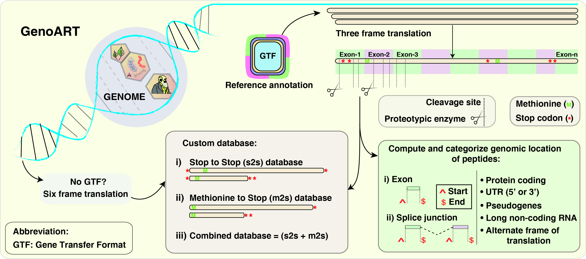
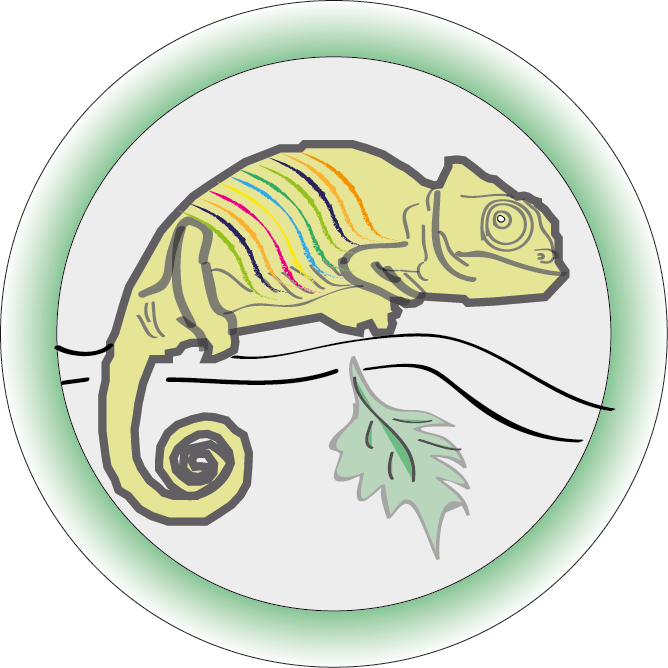
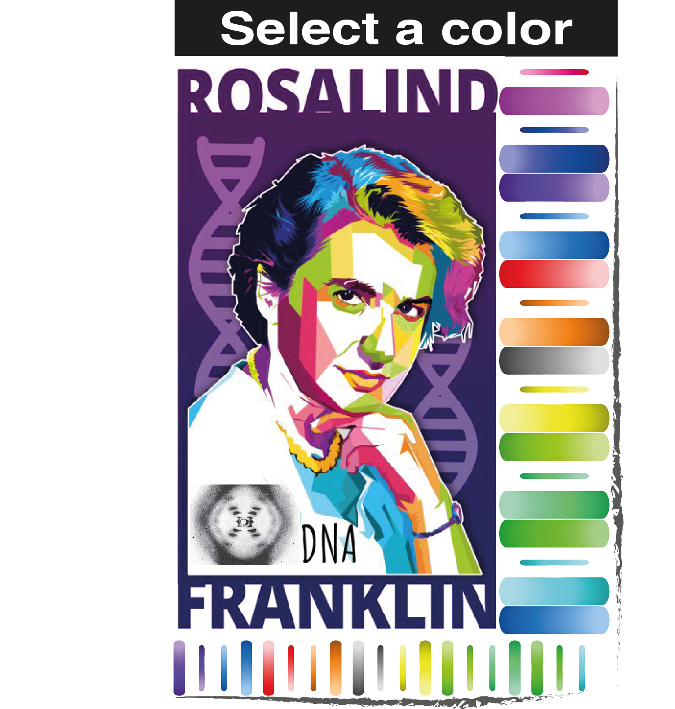

|
GenoART is a standalone application for detecting coding potential of transcripts complemented by experimentally derived proteomics (MS/MS) data. GenoART will make use of Python, PERL and javascripts for processing your input genome and create a custom database for proteogenomic searches. A detailed protocol is available online. In simple terms, the custom database generated by this application can be used as a reference protein database and search the unmatched/unassigned spectra in any search engines such as Mascot, SEQUEST, X! Tandem or Andromeda. GenoART can be queried to categorize and browse these resultant peptides at the click of a button. The peptides will include the genomic coordinates which allows user to navigate to UCSC genome browser which can facilitate more details about the gene/transcript and can be compaired with predicted genes, Expressed sequence Tag (EST), and perform comparitive genomics for more evidence. A GTF (Gene Transfer Format) will be available to download upon querying, which can later be viewed in any genome visualizer such as UCSC or IGV to compare accross different studies.   
Read me
In the preparatory analysis, the peptides provided by the user is filtered with the known reference database and remove ambiguous peptides introduced by isobaric ions. A tab delimited text file should be provided as input, where the first column should be peptide sequence. The preparatory analysis yields two files: one mapping to reference proteins and one that doesn't map, and they are named as ProteinCoding and GSSPs respectively. NOTE: The file name should not contain special characters or spaces. Please find a sample input file for reference. | ||